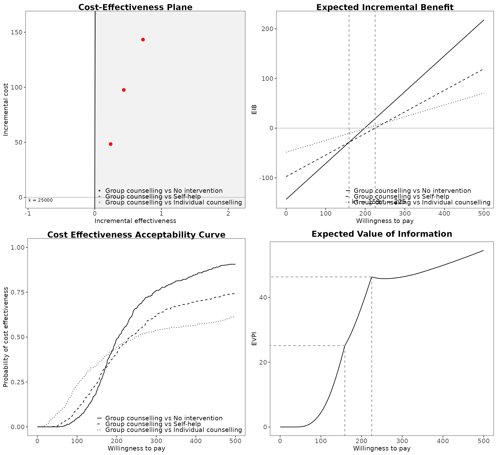
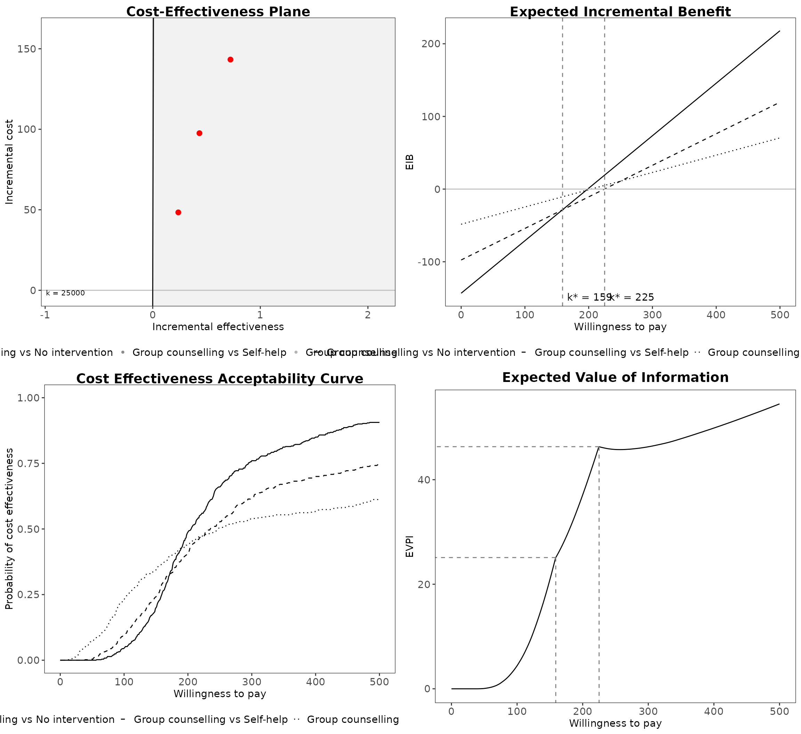
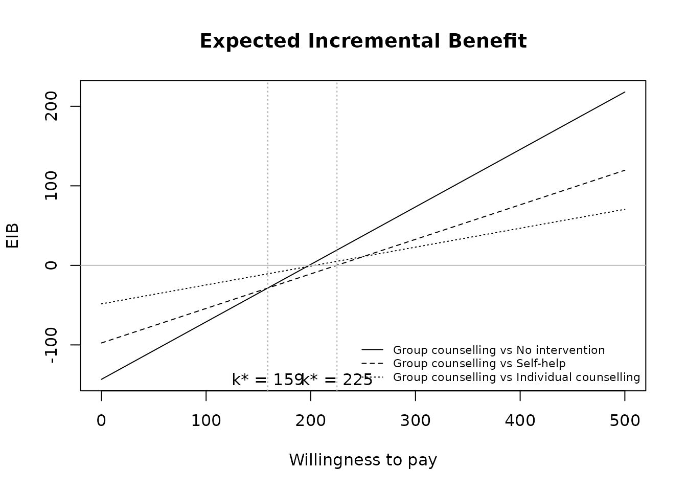
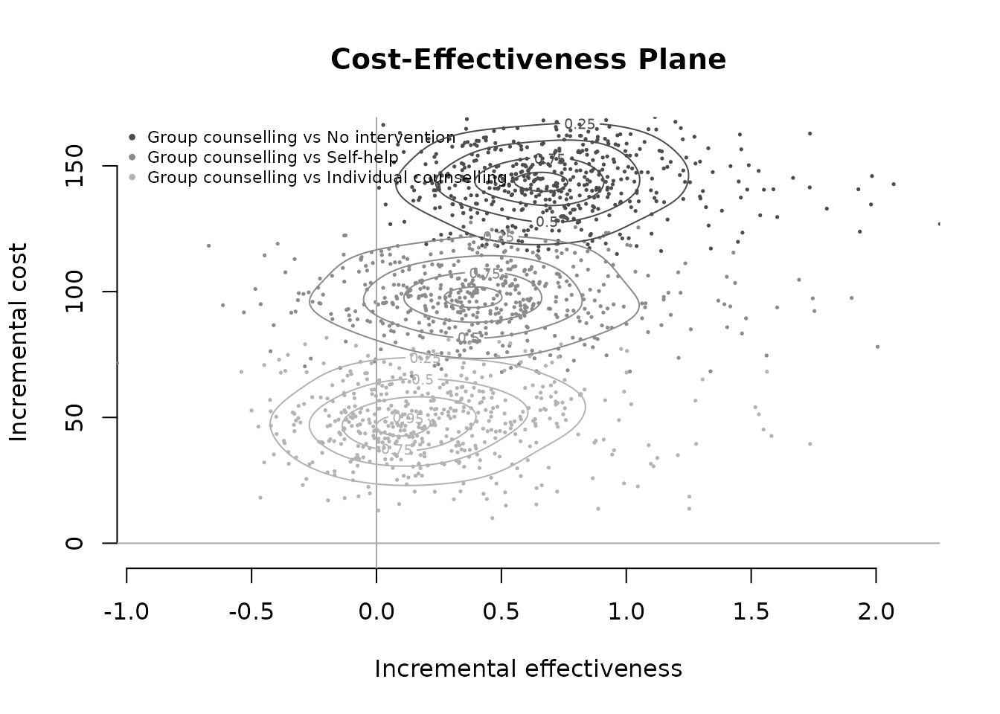

This vignette will demonstrate a simple cost-effectiveness analysis using BCEA using the smoking cessation data set contained in the package.
Load the data.
data(Smoking)This study has four interventions.
treats <- c("No intervention", "Self-help", "Individual counselling", "Group counselling")Setting the reference group (ref) to Group
counselling and the maximum willingness to pay (Kmax)
as 500.
bcea_smoke <- bcea(eff, cost, ref = 4, interventions = treats, Kmax = 500)We can easily create a grid of the most common plots

plot(bcea_smoke, graph = "ggplot2")
#> Warning: Removed 1500 rows containing missing values or values outside the scale range
#> (`geom_point()`).
plot(bcea_smoke, graph = "ggplot2", pos = "bottomvertical")
#> Warning: Removed 1500 rows containing missing values or values outside the scale range
#> (`geom_point()`).
plot(bcea_smoke, graph = "ggplot2", pos = "bottomhorizontal")
#> Warning: Removed 1500 rows containing missing values or values outside the scale range
#> (`geom_point()`).
Individual plots can be plotting using their own functions.
ceplane.plot(bcea_smoke, comparison = 2, wtp = 250)
eib.plot(bcea_smoke)
contour(bcea_smoke)
ceac.plot(bcea_smoke)
ib.plot(bcea_smoke)
#> NB: k (wtp) is defined in the interval [0 - 500]More on this in the other vignettes but you can change the default plotting style, such as follows.
plot(bcea_smoke,
graph = "ggplot2",
wtp = 250,
line = list(color = "red", size = 1),
point = list(color = c("plum", "tomato", "springgreen"), shape = 3:5, size = 2),
icer = list(color = c("red", "orange", "black"), size = 5))
#> Warning: Removed 1500 rows containing missing values or values outside the scale range
#> (`geom_point()`).